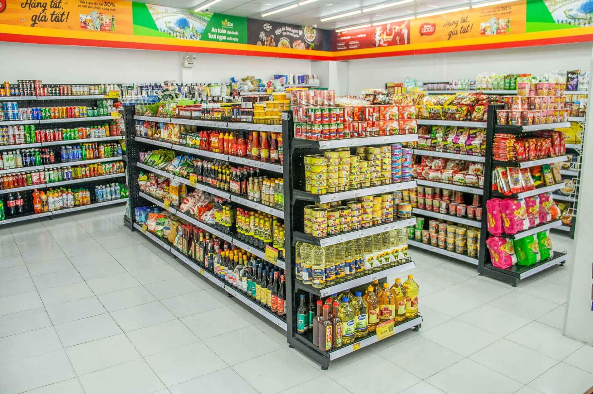

In this project i was able to Use python to analyse the data efficeintly. I also used python to concatinate 12 months of data in different csv files into one single csv after which i proceed to get statistical insight to the data set.
In this project I use a Logistic Regression machine learning model to predict whether or not a patient is having Heart disease or is going to have heart disease based on the dataset provided.
In this project i did an exploartotry analysis where i compare diffirent countries electricity consumptions to each other, I use linear regression machine learning algorithm to predict future electricty consumption in different countries. I also deploy my model using FASTAPI
In this project i build a classification model by using NLP techniques, I also did a major cleanup for tweets data, regularization and hyperparameter tuning using stratified k-fold and cross validation to get the best. I also deploy my model using FASTAPI
In this project i did an exploratory analysis for the year 1900-2020 and i was able to compare music produced in the 1900's to the music we have now.
In this project i did an exploratory analysis in which i compare the birth and death rate of two clinics(Clinic 1, Clinic 2) together and make conclusion based on the increase number of death rate in a particular clinic over the other one.

In this project i was able to do an exploratory analysis on customers loan records based on their gender, relationship status, employment details and education status. I also built a machine learning model to predict whether or not a customer is likely to be given a loan or not.

Due to the current rate of relocation around the world i did an analysis of different types of Visa issued and the types of company people are relocating to. Based on the dataset i was able to get some insightful information.
In this project i use Linear Regrssion and Random Forest Regressor machine learning model and my Accuracy Score on training set is 98% while that of testing set is 88%.
In this project i used Decision Tree Regressor and Linear Regression to predict.
In this project i did an exploratory analysis of paitient age, tumour stage and the level of protein. Using Logistic Regression i was able to predict if a patient is having or going to have Breast Cancer.
In this project i was able to Build a machine learning model to predict if a patient is diabetic or not.
In this project i was abel to built a machine learning model to predict.
Due to the current outbreak of this disease around the world. I did an exploratory analysis where i compare diffrent affected countries based on there age, gender, travel history. I also did an analysis of the confirm cases around the world.